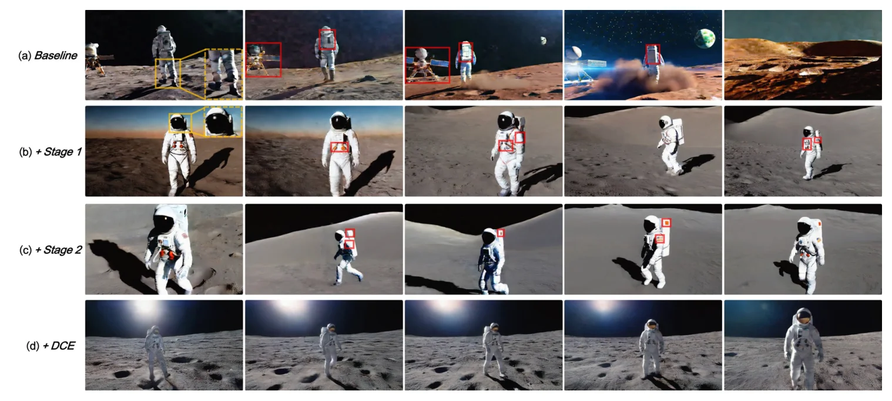
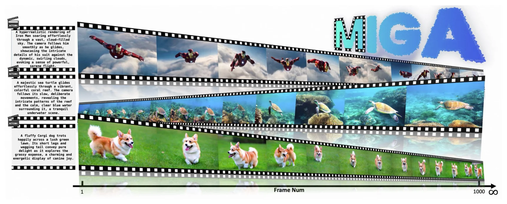
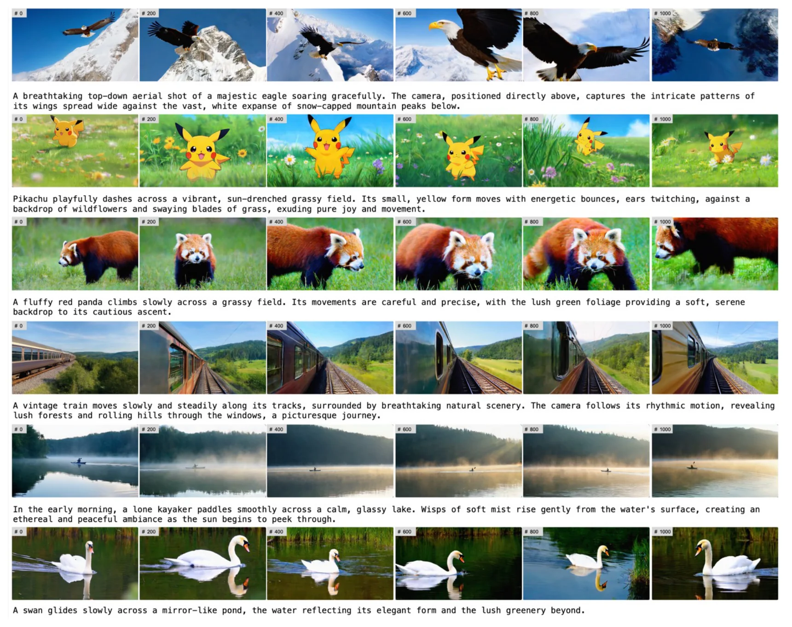
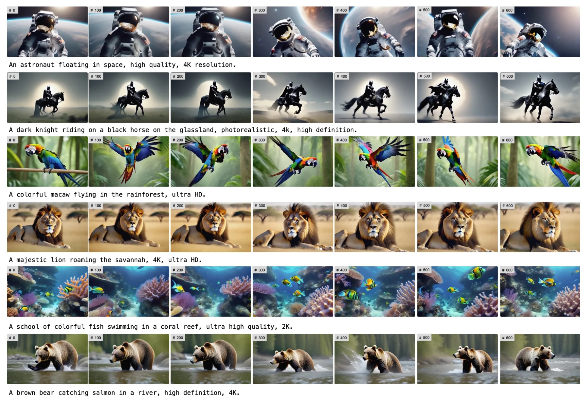
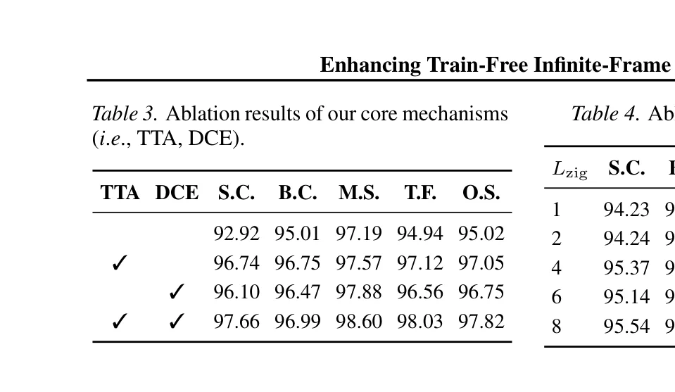
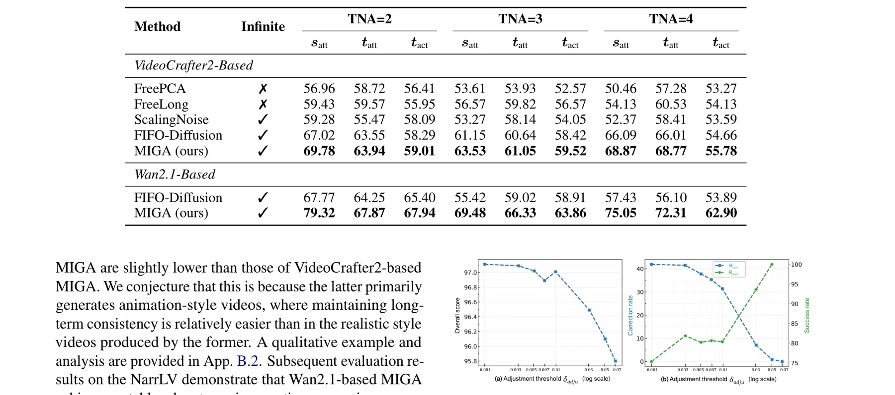
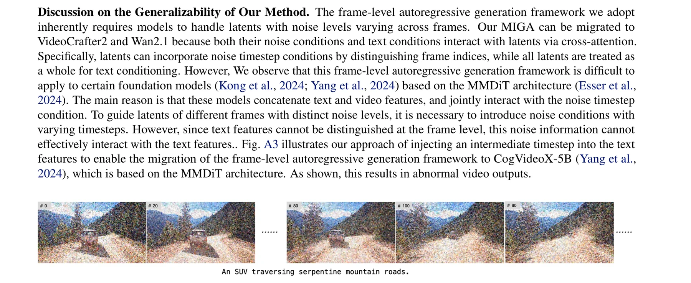

无限帧长视频生成的三重困境
长视频生成是电影制作、游戏开发和世界模拟等应用场景的核心需求。然而，现有基础视频生成模型（如Wan2.1、VideoCrafter2）通常仅支持固定长度的短视频（如81帧）。如何在不增加训练成本的前提下，将短视频生成能力扩展到无限帧长视频？这一问题构成了当前研究的核心挑战。
MIGA论文指出，现有的无训练帧级自回归框架（以FIFO-Diffusion为代表）面临三重困境：训练-推理不匹配、长期一致性不足、以及噪声跨度约束。这三个问题相互交织，严重制约了基础模型的生成潜力。
图：MIGA论文识别的三重困境及其对应的解决方案架构
FIFO-Diffusion虽然实现了无限帧生成的技术可行性，但其实际生成质量与训练阶段的能力之间存在巨大差距。这类似于让一个只学习过统一考试的学生突然面对混合难度试卷——模型并非不能工作，而是无法在不匹配的条件下充分发挥潜力。MIGA的核心洞察在于：与其让模型适应不匹配的条件，不如主动消除不匹配本身。
MIGA在VideoCrafter2和Wan2.1-1.3B两个基础模型上均取得SOTA性能，且不引入任何额外训练参数。这意味着该方法具有良好的通用性和即插即用特性，可以与未来更强大的基础模型无缝结合。
FIFO-Diffusion：无限帧生成的先驱与瓶颈
要理解MIGA的创新，首先需要深入分析其基线方法FIFO-Diffusion的核心机制。FIFO-Diffusion通过维护一个噪声队列实现帧级自回归生成：队列中包含T个潜在特征，噪声级别从低到高排列。每次推理后，队首的干净帧被出队保存，队尾追加新的高斯噪声帧，从而实现"先进先出"的连续生成。
图：FIFO-Diffusion的噪声队列结构与滑动窗口推理机制，以及核心瓶颈
FIFO-Diffusion的理论分析已经证明，无训练自回归生成引入的误差受输入潜在特征的噪声跨度约束。然而，其最终方案仍然要求模型处理跨度为$f_0$的噪声级别——这与训练时的单一噪声级别条件存在根本性差异。
理论分析：噪声跨度与误差上界
其中 $\Delta\tau_{\text{span}}$ 为输入潜在特征的噪声跨度，$C$ 为与模型相关的常数。FIFO-Diffusion中 $\Delta\tau_{\text{span}} = f_0$，而训练时 $\Delta\tau_{\text{span}} = 0$。
FIFO-Diffusion的滑动窗口机制意味着每次推理时，模型需要同时处理从低噪声到高噪声的$f_0$个帧。这种"混合难度"输入在训练阶段从未出现过——模型只学习过处理统一噪声级别的帧。误差上界的分析表明，噪声跨度直接决定了生成质量的上限，这为MIGA的两阶段对齐机制提供了理论依据。
FreeNoise、FreeLong、FreePCA等方法通过增加输入帧数实现长视频生成，但其显存消耗与帧数成正比，无法支持分钟级视频。FIFO-Diffusion的恒定显存特性使其成为无限帧生成的唯一可行方案。MIGA选择在FIFO框架内进行优化，而非另起炉灶，体现了对方法论基础的深刻理解和务实选择。
两阶段训练-推理对齐 (TTA)：缩小噪声跨度
MIGA的核心创新之一是两阶段训练-推理对齐机制 (Two-Stage Training-Inference Alignment, TTA)。该机制通过两个专门的优化阶段，系统性地缩小推理时输入潜在特征的噪声跨度，从而最大化地对齐训练和推理条件。
第一阶段：Zigzag迭代去噪
第一阶段的核心思想是减缓噪声级别的变化速率。传统FIFO-Diffusion中，每个帧的噪声级别依次递增；而在MIGA的Zigzag结构中，每$L_{\text{zig}}$个连续帧共享同一噪声级别。这种"阶梯式"的噪声分布显著降低了模型在单次推理中需要处理的噪声跨度。
图：FIFO-Diffusion传统队列与MIGA Zigzag队列的噪声分布对比
第二阶段：统一噪声级别去噪
在第一阶段经过$n$次迭代后，MIGA获得$nL_{\text{zig}}$个潜在特征，它们全部处于相同的时间步$\tau_{e-1}$。这些潜在特征构成第二阶段的队列$Q_{s2}$。由于所有帧共享同一噪声级别，模型在每次去噪操作中处理的是强度一致的输入——这完美匹配了训练条件。
所有潜在特征共享同一噪声级别 $\tau_{e-1}$，训练-推理对齐达到最优
TTA的设计体现了一种"分而治之"的策略智慧：第一阶段通过Zigzag结构将"大跨度"问题分解为多个"小跨度"子问题，第二阶段则在统一条件下完成最终去噪。这种设计不仅解决了技术问题，还揭示了一个更深层的洞察——训练-推理差距并非不可弥合，关键在于如何设计中间状态使其逐步收敛到训练条件。
FIFO-Diffusion
单步噪声跨度 = $f_0$
模型面对混合噪声级别
训练-推理差距大
MIGA Stage 1
单步噪声跨度 = $L_{\text{zig}}$
Zigzag减缓噪声变化
差距显著缩小
MIGA Stage 2
单步噪声跨度 = 0
统一噪声级别去噪
完全匹配训练条件
# MIGA Two-Stage Training-Inference Alignment (TTA)
# 参考 Algorithm 5 in the paper
def miga_tta_generation(Q, t, N, L_zig, e, eps_theta, phi):
"""
Q: 初始化后的Zigzag噪声队列
t: 对应的时间步序列
N: 目标生成帧数
L_zig: Zigzag宽度 (如4或7)
e: Stage 1去噪到的时间步
"""
Q_gen = []
# ===== Stage 1: Zigzag Iterative Denoising =====
n_iter = math.ceil(N / L_zig)
for i in range(n_iter):
# 对整个队列执行一步去噪
Q = phi(Q, t, eps_theta)
# 出队L_zig个部分去噪的潜在特征
for j in range(L_zig):
z_clean = Q.dequeue()
Q_gen.append(z_clean)
# 追加新的高斯噪声帧到队尾
z_noise = torch.randn_like(z_clean)
Q.enqueue(z_noise)
# ===== Stage 2: Unified Noise Level Denoising =====
# 所有Q_gen中的帧现在处于相同噪声级别
t_unified = [tau_{e-1}] * len(Q_gen)
# 滑动窗口去噪直到完全干净
for step in range(e - 1):
Q_gen = sliding_window_denoise(
Q_gen, t_unified, eps_theta, phi
)
t_unified = [t - 1 for t in t_unified]
return Q_gen # N个完全去噪的帧对于VideoCrafter2基础模型，MIGA配置为$T=64$、$L_{\text{zig}}=4$、$\tau_e=10$。这意味着Stage 1将噪声跨度从16（$f_0$）缩减到4（$L_{\text{zig}}$），缩减比达到4倍。对于Wan2.1-1.3B，配置为$T=54$、$L_{\text{zig}}=7$，对应缩减比约为3倍。
双重一致性增强 (DCE)：自反思与远程引导
虽然TTA机制有效缓解了训练-推理差距，但长视频生成的另一个核心挑战——长期一致性——仍需专门的建模设计。MIGA提出了创新的双重一致性增强机制 (Dual Consistency Enhancement, DCE)，利用维护的潜在队列特性，从两个互补角度提升时序一致性。
图：MIGA双重一致性增强机制——自反思作用于高噪声尾部，远程引导作用于低噪声头部
DCE的两个组件针对队列的不同位置发挥互补作用：自反思关注队列尾部的高噪声潜在特征，通过自我一致性评估和纠正确保新生成内容的质量；远程帧引导则关注队列头部的低噪声潜在特征，将其融入每次局部去噪过程中，建立远距离帧之间的特征交互。
DCE的设计巧妙地利用了Zigzag队列的自然结构：尾部的高噪声帧是"不确定的"，需要自我纠正；头部的低噪声帧是"确定的"，可以作为可靠的引导信号。这种对同一数据结构的双重解读——既是需要修正的对象，又是可靠的参考——体现了作者对扩散模型去噪过程的深刻理解。
ScalingNoise在每一步都执行搜索，计算开销巨大且缺乏针对性。MIGA的自反思机制则首先定位一致性异常的位置，只在必要时触发搜索——这是一种"按需计算"的策略。更重要的是，MIGA的搜索在高噪声阶段进行，纠正效果可以通过后续去噪过程传播到整个视频，而ScalingNoise的搜索在干净像素级别进行，无法影响早期帧的布局决策。
自反思机制：无外部评估器的一致性检测
自反思机制的核心创新在于提出了一种无需外部评估模型的一致性检测方法。现有方法（如ScalingNoise）依赖DINO等外部模型进行一致性评估，不仅增加了计算开销，还需要额外的去噪和VAE解码步骤。MIGA的关键发现是：VAE预训练产生的潜在空间具有强可解释性，潜在特征之间的距离直接反映了对应视频帧之间的差异程度。
一致性分数计算
其中 $q_{\text{eval}}$ 为待评估的 $f_{\text{eval}}$ 个连续潜在特征，$q_{\text{ref}}$ 为前 $f_{\text{ref}}$ 个相邻潜在特征作为参考
关键发现：噪声一致性与干净一致性的强相关性
论文中最令人惊讶的发现之一是：即使在高噪声级别下，潜在特征的一致性分数与干净潜在特征的一致性分数之间仍然保持强相关性。这意味着可以在去噪的早期阶段就检测到一致性异常，而无需等到生成干净像素后再评估。

图：消融研究可视化——从基线依次添加Stage 1、Stage 2和DCE机制的效果对比。黄色框标识噪声突出区域，红色框标识与前帧不一致的区域
最大噪声级别为50时，相关系数仍保持在0.8以上
VAE的潜在空间不仅是数据的压缩表示，更是一个保持语义一致性的度量空间。高噪声扰动虽然改变了潜在特征的绝对值，但相对关系（一致性模式）基本保持不变。这一发现不仅支撑了MIGA的自反思机制，也为更广泛的扩散模型研究提供了重要启示——潜在空间的几何结构在去噪过程中是稳定的。
渐进式引导搜索策略
当检测到一致性异常时，MIGA设计了渐进式引导搜索策略进行纠正。该策略首先随机生成$n_{\text{samp}}$个高斯噪声作为候选起点，然后使用已通过评估的引导帧$q_{\text{guid}}$作为参考，对每个候选进行迭代去噪。最终选择一致性分数最高的候选替换异常帧。
# MIGA Self-Reflection: 渐进式引导搜索
# 参考 Algorithm 6 in the paper
def self_reflection_search(
Q, f_judge, f_ref, f_eval, f_guid,
delta_adju, n_samp, eps_theta, phi
):
"""
Q: 当前噪声队列
f_judge: 判断位置索引
delta_adju: 一致性异常阈值
n_samp: 搜索候选数
"""
# 1. 计算当前一致性分数
q_ref = Q[f_judge - f_ref : f_judge]
q_eval = Q[f_judge : f_judge + f_eval]
C_init = compute_consistency_score(q_eval, q_ref)
# 2. 检测一致性异常
C_prev = get_previous_score() # 前一个块的分数
if C_prev - C_init not < delta_adju:
return Q # 无异常，直接返回
# 3. 触发扩展搜索
q_guid = Q[f_judge - f_guid : f_judge]
best_score = C_init
best_sample = None
for k in range(n_samp):
# 随机初始化候选起点
q_k = [torch.randn_like(Q[0])]
# 渐进式引导去噪
for step in range(L - f_judge):
# 拼接引导帧和候选帧
input_k = concat(q_guid, q_k)
# 执行一步去噪
output = phi(input_k, t, eps_theta)
# 仅更新候选部分
q_k.append(output[-1])
# 追加新噪声帧
q_k.append(torch.randn_like(q_k[0]))
# 评估候选质量
C_k = compute_consistency_score(q_k[:f_eval], q_guid)
if C_k > best_score:
best_score = C_k
best_sample = q_k
# 4. 替换异常帧
if best_sample is not None:
Q[f_judge:] = best_sample
return Q自反思机制本质上是将LLM领域的Test-Time Scaling (TTS)思想适配到视频生成场景。与LLM的"思考-验证-修正"类似，MIGA在推理时通过"生成-评估-搜索"循环提升视频质量。关键创新在于：(1) 利用潜在空间的一致性分数避免外部评估器；(2) 通过噪声-干净相关性实现早期异常检测；(3) 渐进式引导搜索确保纠正效果的传播。
远程帧引导：打破局部窗口的视野限制
基础模型的滑动窗口推理机制意味着，每次去噪时模型只能"看到"$f_0$个相邻帧。这种局部视野严重限制了远距离帧之间的信息交互，导致长视频的一致性随距离衰减。MIGA的远程帧引导 (Long-Range Frame Guidance)机制通过从队列头部稀疏采样$m_{\text{guid}}$个低噪声帧，将其拼接到当前窗口前端，显式建立远距离帧之间的特征交互。
当 $l \in (m_{\text{guid}}, L - m_{\text{guid}}]$ 时，从位置 $l$ 之前均匀采样 $m_{\text{guid}}$ 个引导帧
图：远程帧引导机制——从队列头部采样低噪声帧扩展模型视野
引导帧的选择策略是均匀采样：从$\min(m_{\text{guid}} \cdot L_{\text{zig}}, l-1)$个前序帧中均匀选取$m_{\text{guid}}$个。这种稀疏采样既保证了远程信息的覆盖，又避免了过度增加计算负担。由于引导帧已经是低噪声的干净帧，它们为当前去噪过程提供了稳定的语义锚点。
远程引导的均匀稀疏采样策略有其信息论基础：在长视频中，相邻帧之间的信息高度冗余，而远距离帧之间的信息更具互补性。通过均匀采样而非连续采样，每增加一个引导帧所带来的边际信息增益最大化。实验结果表明，$m_{\text{guid}}=6$时达到最优性能，这暗示了在信息增益和计算开销之间存在一个自然的平衡点。
低噪声的引导帧在去噪过程中扮演着"语义锚点"的角色——它们已经接近最终的干净状态，包含了确定的语义信息（如主体外观、背景布局、运动方向）。当模型处理这些引导帧与当前窗口帧的拼接输入时，注意力机制自然地建立了远距离帧之间的特征对齐，从而确保新生成的帧在语义上与早期帧保持一致。
# MIGA Long-Range Frame Guidance
# 集成到滑动窗口推理中
def guided_sliding_window_denoise(
Q, t, eps_theta, phi, m_guid, L_zig
):
"""
Q: 噪声队列 (L个帧)
m_guid: 引导帧数量
L_zig: Zigzag宽度
"""
L = len(Q)
f0 = model.max_frames # 基础模型窗口大小
l_stride = f0 // 2
n_iter = math.ceil((L - f0) / l_stride) + 1
for i in range(n_iter):
s_idx = i * l_stride
e_idx = min(s_idx + f0, L)
if s_idx <= m_guid:
# 队列头部: 不应用引导
# (引导帧不足)
q_input = Q[s_idx : e_idx]
else:
# 从前序帧中均匀采样引导帧
n_prior = min(m_guid * L_zig, s_idx)
guide_indices = np.linspace(
0, n_prior - 1, m_guid
).astype(int)
q_guid = [Q[idx] for idx in guide_indices]
# 拼接: [引导帧 | 局部窗口帧]
q_local = Q[s_idx : e_idx - m_guid]
q_input = q_guid + q_local
# 执行去噪 (仅更新局部帧)
q_output = phi(q_input, t[s_idx:e_idx], eps_theta)
# 引导帧保持不变，仅更新局部帧
for j in range(min(l_stride, e_idx - s_idx)):
Q[s_idx + m_guid + j] = q_output[m_guid + j]
return Q消融实验表明，$m_{\text{guid}}=6$时达到最优的Overall Score (96.87)。$m_{\text{guid}}=0$时不应用引导，性能下降约1个点；$m_{\text{guid}}=8$时性能略有下降，可能是因为过多引导帧压缩了局部窗口的有效帧数。这验证了稀疏采样策略的合理性。
全面实验：VBench与NarrLV双基准SOTA
MIGA在两个主流基准上进行了全面评估：VBench评估视频质量（主体一致性、背景一致性、运动平滑度、时间闪烁），NarrLV评估叙事表达能力（场景属性、目标属性、目标动作）。
VBench定量结果

图：MIGA生成的1000+帧长视频示例，基础模型Wan2.1-1.3B默认仅支持81帧
| 方法 | 无限帧 | 主体一致性 | 背景一致性 | 运动平滑 | 时间闪烁 | 总分 |
|---|---|---|---|---|---|---|
| VideoCrafter2-Based | ||||||
| FreePCA | 否 | 93.57 | 95.24 | 93.73 | 91.27 | 93.45 |
| FreeLong | 否 | 95.72 | 96.42 | 98.38 | 97.28 | 96.95 |
| FIFO-Diffusion | 是 | 92.92 | 95.01 | 97.19 | 94.94 | 95.02 |
| ScalingNoise | 是 | 94.29 | 95.52 | 97.86 | 96.12 | 95.95 |
| MIGA (ours) | 是 | 97.66 | 96.99 | 98.60 | 98.03 | 97.82 |
| Wan2.1-Based | ||||||
| FIFO-Diffusion | 是 | 92.67 | 93.37 | 98.03 | 97.09 | 95.29 |
| MIGA (ours) | 是 | 96.46 | 95.50 | 98.85 | 98.14 | 97.24 |
值得注意的是，MIGA作为无限帧生成方法，在VBench上超越了FreeLong等有限扩展方法。这意味着MIGA不仅解决了显存约束问题（恒定显存 vs 线性增长），还在生成质量上实现了突破。更有趣的是，Wan2.1-based MIGA的主体一致性分数（96.46）略低于VideoCrafter2-based MIGA（97.66），论文将此归因于Wan2.1生成的是写实风格视频，一致性维护难度高于动画风格。
NarrLV叙事表达评估
NarrLV是一个评估长视频叙事表达能力的新兴基准，通过变化的文本提示测试模型的多场景转换能力。
| 方法 | 无限帧 | TNA=2 satt | TNA=2 tatt | TNA=2 tact | TNA=4 satt | TNA=4 tatt | TNA=4 tact |
|---|---|---|---|---|---|---|---|
| Wan2.1-Based | |||||||
| FIFO-Diffusion | 是 | 67.77 | 64.25 | 65.40 | 57.43 | 56.10 | 53.89 |
| MIGA | 是 | 79.32 | 67.87 | 67.94 | 75.05 | 72.31 | 62.90 |
在NarrLV的TNA=4设置下（最复杂的叙事场景），MIGA相比FIFO-Diffusion在场景属性上提升了17.62分（从57.43到75.05），这是一个巨大的改进。这表明MIGA的双重一致性增强机制不仅提升了视觉一致性，还显著增强了模型对复杂叙事内容的表达能力——因为只有在视觉稳定的前提下，语义信息才能有效传达。
长视频生成示例

图：MIGA生成的长视频序列示例，展示跨数百帧的主体和背景一致性

图：更多MIGA长视频生成示例，展示丰富的叙事内容和稳定的视觉质量
消融研究：每个组件的独立贡献
为了验证各机制设计的有效性，论文在VideoCrafter2-based MIGA上进行了全面的消融研究，系统性地分析TTA和DCE各组件的独立和组合贡献。
核心机制消融
| TTA | DCE | 主体一致性 | 背景一致性 | 运动平滑 | 时间闪烁 | 总分 |
|---|---|---|---|---|---|---|
| - | - | 92.92 | 95.01 | 97.19 | 94.94 | 95.02 |
| ✓ | - | 96.74 | 96.75 | 97.57 | 97.12 | 97.05 |
| - | ✓ | 96.10 | 96.47 | 97.88 | 96.56 | 96.75 |
| ✓ | ✓ | 97.66 | 96.99 | 98.60 | 98.03 | 97.82 |
单独使用TTA和DCE分别带来+2.03%和+1.73%的总分提升，而两者组合后提升达到+2.80%。这说明两个机制的作用存在正交性：TTA主要解决训练-推理差距带来的系统性退化，DCE则针对长期一致性的渐进性衰减。两者分别从"输入条件优化"和"输出质量增强"两个维度提升性能，组合效果优于简单叠加。
TTA两阶段消融

表：TTA两阶段设计的消融结果——Stage 1和Stage 2的逐步贡献
从基线到Stage 1，主体一致性从92.92提升到95.98（+3.06），这主要归功于Zigzag结构对噪声跨度的大幅缩减。Stage 2进一步将总分从96.78提升到97.05，其关键贡献在于抑制视频噪声——统一噪声级别的去噪确保了最终帧的干净程度。
Zigzag宽度 $L_{\text{zig}}$ 的影响
| $L_{\text{zig}}$ | 主体一致性 | 背景一致性 | 运动平滑 | 时间闪烁 | 总分 |
|---|---|---|---|---|---|
| 1 | 94.23 | 94.52 | 97.98 | 96.47 | 95.80 |
| 2 | 94.24 | 95.93 | 98.55 | 97.90 | 96.66 |
| 4 | 95.37 | 95.96 | 98.65 | 98.02 | 97.00 |
| 6 | 95.14 | 96.04 | 98.60 | 97.97 | 96.94 |
| 8 | 95.54 | 95.96 | 98.56 | 97.90 | 96.99 |
$L_{\text{zig}}$从1增加到4时，总分持续提升（95.80到97.00）；但继续增加到6或8时，性能趋于饱和甚至略有下降。这表明噪声跨度缩减存在边际递减效应：当$L_{\text{zig}}$足够大时，噪声跨度已经小到模型可以轻松处理的程度，进一步缩减带来的收益有限。$L_{\text{zig}}=4$是性能-效率的最优平衡点。
调整阈值 $\delta_{\text{adju}}$ 的影响

图：调整阈值δ_adju对总分、校正率和成功率的影响
阈值$\delta_{\text{adju}}$控制自反思搜索的触发频率。较小的阈值导致更频繁的搜索，提升了校正率$R_{\text{corr}}$和总分，但当阈值过小时，$R_{\text{succ}}$下降（触发了不必要的搜索）。$\delta_{\text{adju}}=0.01$是性能与计算开销的最优平衡点。
$\delta_{\text{adju}}$的消融结果揭示了Test-Time Scaling在视频生成中的一个关键特性：搜索的收益存在饱和点。当一致性异常的发生概率有限时，增加搜索频率只能捕获到有限的额外异常。这与LLM中TTS的观察一致——推理时计算的增加并非线性提升性能，而是存在一个"计算效率前沿"。MIGA通过$\delta_{\text{adju}}$参数显式地控制这一前沿，使用户可以根据计算预算灵活调整。
引导帧数量 $m_{\text{guid}}$ 的影响
| $m_{\text{guid}}$ | 主体一致性 | 背景一致性 | 运动平滑 | 时间闪烁 | 总分 |
|---|---|---|---|---|---|
| 0 | 94.23 | 94.52 | 97.98 | 96.47 | 95.80 |
| 2 | 94.66 | 94.72 | 98.64 | 98.05 | 96.52 |
| 4 | 94.59 | 94.58 | 98.64 | 98.10 | 96.48 |
| 6 | 95.45 | 95.69 | 98.45 | 97.89 | 96.87 |
| 8 | 95.32 | 95.12 | 98.60 | 98.05 | 96.77 |
$m_{\text{guid}}$的消融结果揭示了一个有趣的U形趋势：从0到6持续提升，8时略有下降。这是因为引导帧占据了模型输入窗口的一部分——过多的引导帧会压缩局部窗口的有效帧数，减少模型处理当前区域的信息量。$m_{\text{guid}}=6$代表了"远程语义信息"与"局部细节信息"之间的最优平衡点。
开放性科研问题
基于对MIGA论文的深入分析，我们提出以下五个具有研究价值的开放性问题，每个问题都包含理论分析和潜在的调查方向。
自反思机制能否与更复杂的搜索策略结合？
理论分析：MIGA当前的渐进式引导搜索采用随机采样+贪心选择策略，搜索效率受限于候选多样性。在LLM领域，蒙特卡洛树搜索(MCTS)、束搜索(Beam Search)等结构化搜索已被证明能显著提升生成质量。
调查方向：探索将MCTS引入自反思搜索的可能性——每个候选生成路径可以作为树的一个分支，利用一致性分数作为节点评估函数。关键挑战在于如何设计高效的剪枝策略，避免搜索空间的指数级膨胀。另一个方向是将搜索过程与扩散模型的采样器设计相结合，例如在DDPM的每一步引入多候选评估。
Zigzag结构的最优宽度是否依赖于视频内容复杂度？
理论分析：MIGA对所有视频统一使用$L_{\text{zig}}=4$的固定宽度，但不同内容复杂度的视频可能需要不同的噪声跨度缩减策略。简单场景（如静态背景）可能容忍更大的$L_{\text{zig}}$，而复杂场景（如快速运动、多主体交互）可能需要更小的$L_{\text{zig}}$以确保模型能力的充分发挥。
调查方向：设计自适应的$L_{\text{zig}}$调度策略——在生成过程中根据内容复杂度动态调整Zigzag宽度。可以通过前序帧的运动幅度、场景变化率等指标估计当前区域的复杂度。另一种思路是学习一个轻量级的控制器网络，根据当前队列状态预测最优$L_{\text{zig}}$。
一致性分数在潜在空间的几何解释是什么？
理论分析：MIGA发现潜在空间的余弦相似度能有效衡量帧间一致性，且该指标在高噪声下仍保持强相关性。这一现象的理论解释尚不完整——为什么VAE的潜在空间具有这种"噪声不变的一序保持"特性？这是否与VAE的训练目标（重构损失+KL散度）有关？
调查方向：从信息几何角度分析VAE潜在空间的结构特性，特别是噪声扰动对流形结构的影响。可以通过可视化高维潜在空间的局部几何（如测地线距离、曲率）来理解一致性分数的数学基础。另一个方向是探索其他潜在空间（如预训练DINO-ViT的特征空间）是否具有类似的性质。
MIGA框架能否扩展到多模态条件控制的长视频生成？
理论分析：论文展示了MIGA支持多文本提示控制的能力（不同时间位置对应不同文本条件）。然而，实际应用中的长视频生成往往需要更丰富的条件控制，如深度图序列、光流、人体姿态、音频信号等。这些多模态条件与MIGA的Zigzag队列和DCE机制之间可能存在有趣的交互效应。
调查方向：探索在MIGA框架中引入额外条件信号的方法——例如，将深度图序列作为队列中帧的附加特征，或利用音频信号指导自反思搜索的方向。关键挑战在于如何在保持恒定显存的同时处理多模态信息的对齐和融合。另一个有趣的方向是探索条件信号的一致性是否可以辅助MIGA的一致性检测机制。
训练-推理对齐的理论边界在哪里？
理论分析：TTA通过两阶段设计将噪声跨度从$f_0$缩减到$L_{\text{zig}}$再到0。理论上，噪声跨度的缩减极限是0（完全匹配训练条件），但这是否意味着无限缩减一定带来无限提升？是否存在一个"对齐收益递减"的理论边界？FIFO-Diffusion的误差上界分析是否可以扩展到TTA框架？
调查方向：建立TTA框架的严格误差上界理论，分析$L_{\text{zig}}$、$\tau_e$、Stage 2步数等超参数对生成质量的定量影响。另一个方向是探索"过度对齐"的可能性——当噪声跨度过小时，自回归生成的信息传递能力是否会被削弱？这可能揭示训练-推理对齐与自回归信息流之间的根本性权衡。
论文总结与未来展望
MIGA的核心贡献
MIGA提出了一个优雅的无训练无限帧长视频生成框架，通过两个互补的创新机制解决了现有方法的根本性局限：
- 两阶段训练-推理对齐 (TTA)：通过Zigzag迭代去噪和统一噪声级别去噪，将推理时的噪声跨度从$f_0$缩减到0，系统性地弥合训练-推理差距
- 双重一致性增强 (DCE)：自反思机制利用潜在空间的噪声不变一致性实现无外部评估器的异常检测与纠正，远程帧引导通过稀疏采样建立远距离帧之间的特征交互
MIGA的成功不仅在于具体的技术方案，更在于其方法论层面的启示：(1) "对齐"思想可以系统性地解决训练-推理差距，这一原则在其他生成任务中也具有普适性；(2) 潜在空间的几何性质可以被创造性地用于设计无外部依赖的评估机制；(3) 自回归框架的队列结构不仅是生成的基础设施，更可以被双重利用为一致性增强的工具。这些洞察对未来的研究方向具有重要的指导价值。
MIGA的计算效率分析表明，自反思搜索虽然只在异常发生时触发，但每次搜索的计算开销仍然可观（需要生成多个候选并评估）。未来的研究可以探索更高效的搜索策略，如利用扩散模型的梯度信息进行定向搜索，或设计轻量级的异常预测模型提前判断是否需要搜索。此外，MIGA目前在动画风格视频上的表现优于写实风格，这暗示了风格感知的自适应策略可能是一个有价值的研究方向。

图：MIGA框架的完整流程图——展示自反思和远程引导在队列中的作用位置